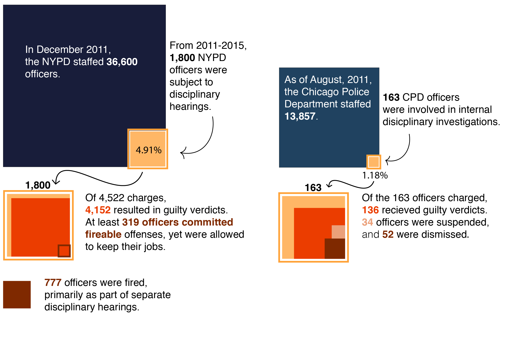
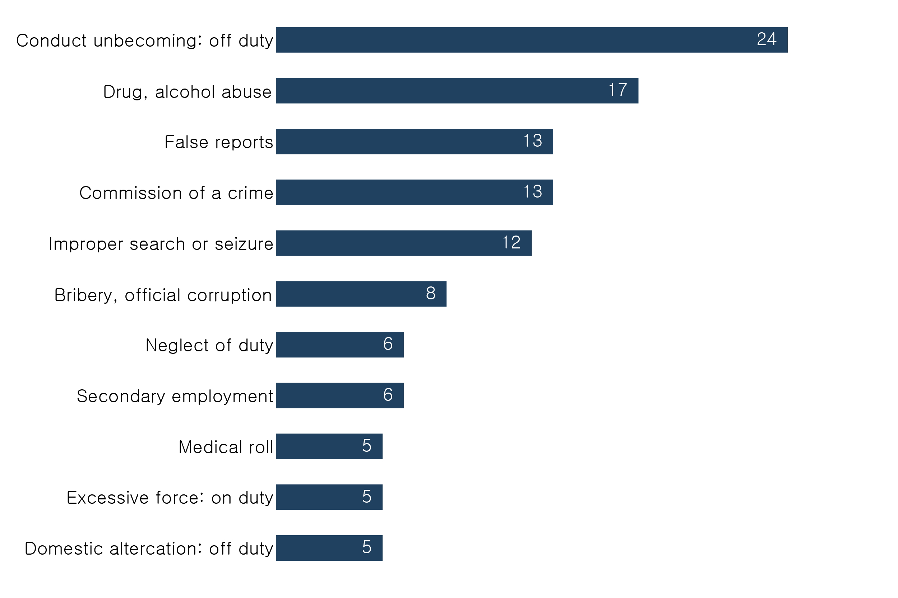

BY Veronica Penney
Published Aug. 10, 2018
The New York City Police Department and the Chicago Police department, two of the largest police departments in the country, differ drastically in their approach toward officer discipline. They also differ in their policies regarding publicly-available information.
While the Chicago Police Department makes police disciplinary records available online, the New York Police Department's records have been sealed since 2016. The NYPD tried to release "deidentified," partial records earlier this year, but the Patrolmen's Benevolent Association, a powerful police lobbying group, sued to keep the records sealed.
The best comparison available is through examining information from 2011 through 2015. Earlier this year, BuzzFeed released leaked NYPD disciplinary records, which allow for comparison with the Chicago Police Department's historical records.
Lose vacation days, or lose your job
The NYPD and CPD take different disciplinary approaches.
Sources: NYPD disciplinary records, Chicago Police Board.
From 2011 through 2015, almost 4.91% of NYPD officers were involved in disciplinary hearings, but based on the available data, none of those officers were dismissed. Although 391 officers committed infractions that by the NYPD's own standards, are firable offenses, all of those officers were allowed to remain on the force.
Allegedly, 777 NYPD employees were fired in this same time period, but those records are separate and remain sealed. Even if there were only 777 cases and every single one of them returned guilty verdicts where the officer was dismissed, the NYPD's rate of dismissal for guilty verdicts is still lower than the CPD's--30.2% at the NYPD and 31.9% at the CPD.
Due to differences in reporting methodologies between New York City and Chicago, it's difficult to draw any definitive conclusions from this data. However, signs point to more lax disciplinary action at the NYPD than the CPD.
Bonus Chart
The most common disciplinary infractions at the Chicago Police Department, 2011-2015.
SOURCE: Chicago Police Board